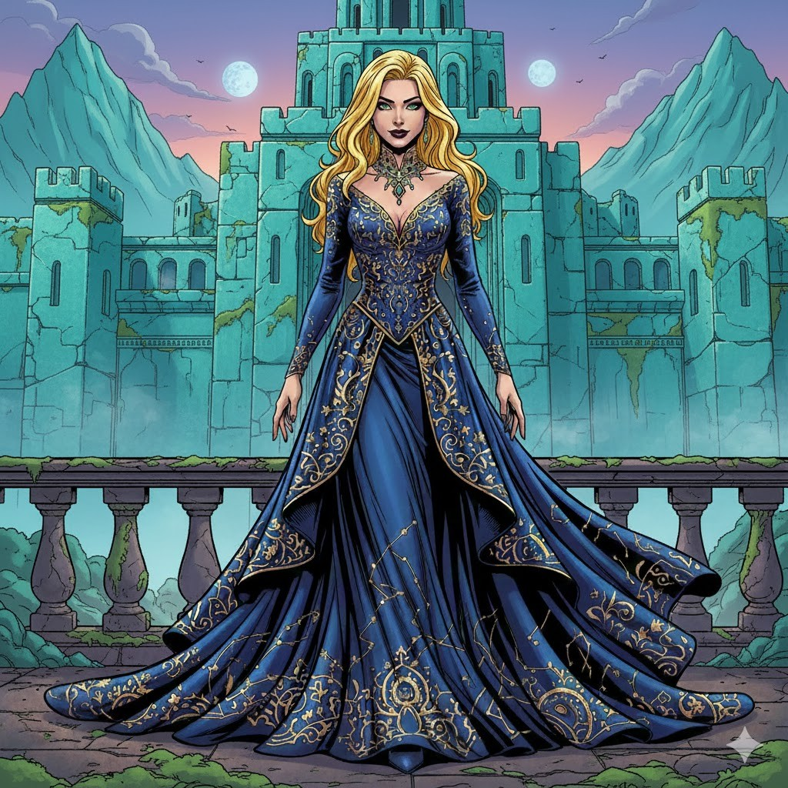

Роберт
Главный герой, основатель «Нашей Утопии»
Выживший после катастрофы мечтатель и лидер. Передвигается на мотоцикле, умеет фехтовать и пытается построить новое общество на доверии, труде и взаимопомощи.
Здесь собраны ключевые фигуры «Предчувствия»: центральные герои, союзники, антагонисты и те, через кого роман раскрывает свои главные темы — надежду, разлом, верность и власть.
Главный герой, основатель «Нашей Утопии»
Выживший после катастрофы мечтатель и лидер. Передвигается на мотоцикле, умеет фехтовать и пытается построить новое общество на доверии, труде и взаимопомощи.

Любимая Роберта, символ надежды
Сильная, независимая и сострадательная женщина с медицинскими навыками. В воспоминаниях и видениях Роберта она связана с заботой, красотой и смыслом борьбы.

Умная и опасная интриганка
Харизматичная участница общины, уверенная в своей правоте. Предлагает ввести валюту и постепенно становится источником раскола внутри крепости.

Гостья, с которой связана отдельная линия чувств и напряжения
Позднее появление в сюжете, важное для линии Кеннета и нравственных конфликтов внутри нового общества.
Архитектор крепости и ключевая фигура сюжета
Элегантный, образованный и запоминающийся персонаж, спроектировавший крепость. Хорошо знает мир дикарей и оказывается важным посредником между сторонами.
Правая рука Роберта
Сильный, надёжный и добрый следопыт. Отлично чувствует угрозы, помогает организовывать оборону и остаётся рядом, когда мечта об Утопии оказывается под ударом.
Стратег и хранитель ресурсов
Рыжеволосая девушка с аналитическим складом ума. До катастрофы работала бухгалтером, а в крепости стала незаменимой в расчётах, снабжении и обороне.
Воин ближнего боя
Бывший военный с мощной физической подготовкой и решительным характером. Полезен в критических ситуациях, хотя его импульсивность нередко становится источником опасности.

Воин и ранний союзник
Лидер вооружённой группы, сначала встречающий Роберта с насмешкой, а затем признающий его силу. Его образ связан с дисциплиной, боевым уважением и памятью о жертве.
Один из первых выживших, встреченных Робертом
Невысокий, хрупкий, вдумчивый. В нём ещё жива надежда на лучшее будущее, поэтому он легче других откликается на призыв Роберта.
Осторожный голос здравого смысла
Сильная и настороженная выжившая. Её опыт сделал её подозрительной к громким обещаниям, и потому она постоянно проверяет мечту Роберта на прочность.
Жестокий противник из пустыни
Лидер враждебной группы, олицетворяющий грубую силу, властолюбие и смертельную угрозу на раннем этапе истории.
Главарь дикарей
Яростный защитник традиций своего лагеря. Для него чужая утопия — это вторжение, поэтому всякая попытка договориться с ним проходит по грани открытого конфликта.